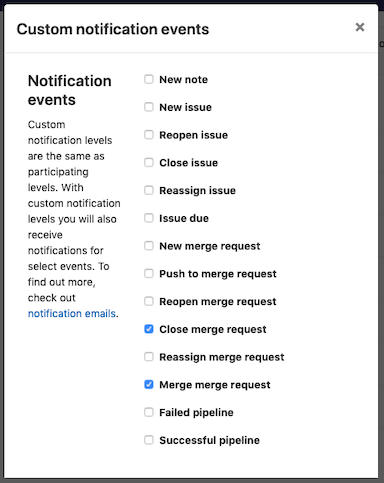

Git Version Control
Introduction
We will be using Git version control to submit assignments. Git is a version control system developed in 2005 by Linus Torvalds (creator of the Linux operating system). For those unfamiliar with Git, here is a video that gives a high-level explanation.
Setup GitLab Account
GitLab, GitHub and Bitbucket are the most well known Git hosts. They enable your repository to be available to those on the Internet. A repository is a digital directory or storage space where you can access your project, its files, and all the versions of its files that Git saves. You will be using GitLab as it provides for free the features we need whereas GitHub charges for them.
Create an Account
- Open a web browser and type "gitlab.com."
- Once the GitLab website loads go to the upper-right corner, click "Register."
- Finish the remainder of the form as directed and click "Register."
- You will receive a verification email shortly from GitLab. If you do not receive one, check your Spam or Junk folder.
- Open the email and follow the directions given.
After you create a GitLab account, open this spreadsheet and enter your username. Add a new row with your name and BYU-I username if your name is not listed. Your instructor will use this information to create your repository and web site. You will be emailed the links to both of them later
Change Notifications
- Log into your GitLab account. If you are already logged go to the upper-right corner and click on your profile picture.
- Once the menu appears click "Settings".
- Locate the sidebar on the left and click "Notifications".
-
In the right panel, click on the "Global" dropdown belonging to your "acme" repository.

-
Select the "Custom" selection and check the options other than "Close merge request", "Merged merge request", and "Failed pipeline"
